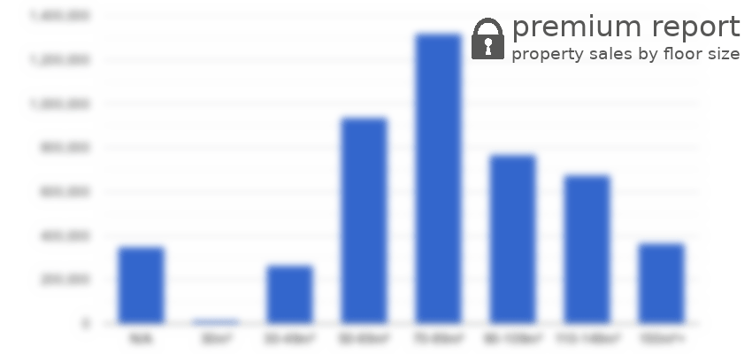

Blackpool sales share of new homes and older homes
November 2020 - October 2021

There were 4.1k property sales in Blackpool postcode area in the previous twelve months and sales increased by 1.2% (56 transactions). 86 properties, 2.1% were sales of a newly built property. Most properties were sold in the £100k-£150k price range with 1207 (29.6%) properties sold, followed by £50k-£100k price range with 990 (24.2%) properties sold.


| Property price range | Market share | Sales volume |
|---|---|---|
| under £50k | 1.2% | 49 |
| £50k-£100k | 24.2% | 990 |
| £100k-£150k | 29.6% | 1.2k |
| £150k-£200k | 18.6% | 760 |
| £200k-£250k | 10.3% | 422 |
| £250k-£300k | 5.6% | 230 |
| £300k-£400k | 5.8% | 235 |
| £400k-£500k | 2.2% | 91 |
| £500k-£750k | 2.0% | 82 |
| £750k-£1M | 0.3% | 12 |
| over £1M | 0.1% | 5 |
Number of sold properties by floor area size.
Yearly property sales volume by nominal price ranges

Total sales volume by year

Market share by year

Total sales volumes by year

Market share by year

Compares annual percentage change in property transactions to other postcode areas. Metric compares a number of transactions between October 2020 - September 2021 to the number of transactions in the previous 12 months.

Comparison to other postcode areas. Metrics show a percentage change in property transactions (y-axis) and change in the average price (x-axis) between October 2020 - September 2021 and previous 12 months. The size of a circle is directly proportional to a number of property transactions in a postcode area.
 Percentage change in transactions
Percentage change in transactionsshows the total volume of new properties sold a given postcode sector.